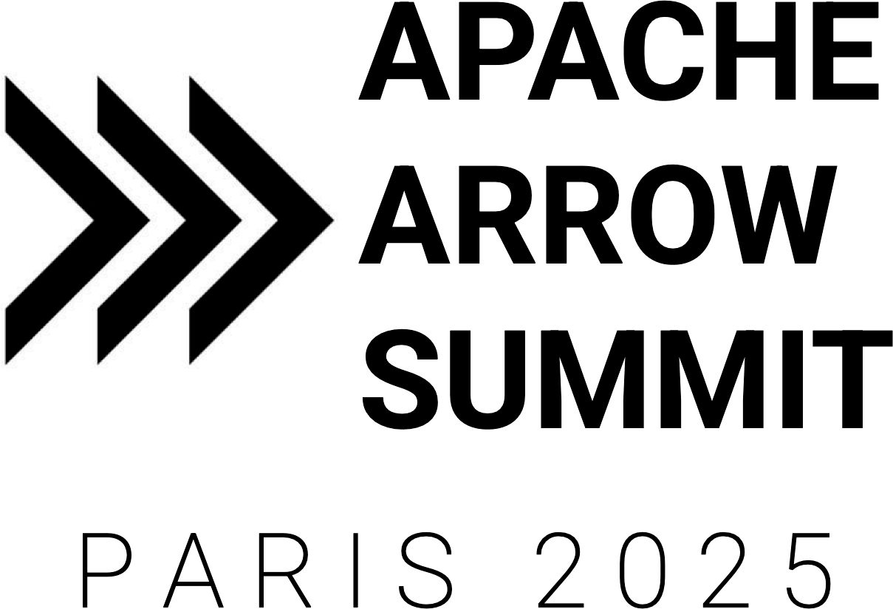
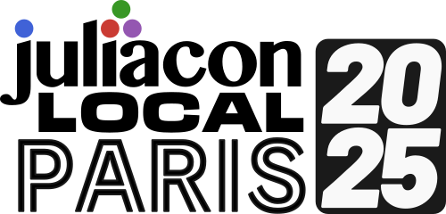
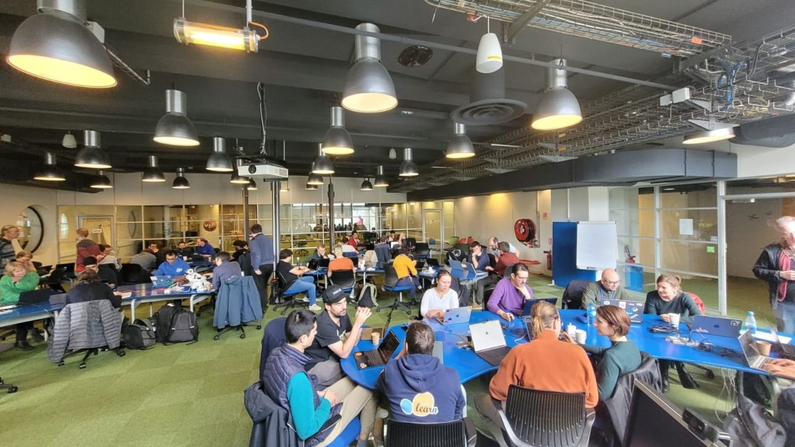

Paris, France
October 2nd & 3rd, 2025
Le Off
Gather with the open-source scientific community

Apache Arrow summit
📅 October 2, 2025
📍 Carrefour Numérique
Just after PyData Paris, you can attend the Apache Arrow Summit 2025, a perfect opportunity to explore the latest in Apache Arrow, and meet maintainers and contributors. More details will be communicated about this event shortly!

JuliaCon Paris
📅 October 2-3, 2025
📍 Conservatoire National des Arts et Métiers (CNAM)
Following PyData, dive into the world of Julia programming at JuliaCon Paris, the European conference on the Julia language. This event is a must for Julia enthusiasts!
PyData Sprints
📅 October 2, 2025
📍 Carrefour Numérique
A 1-day hackathon for maintainers and contributors to advance open-source projects. Free and open to all!
More information here.
